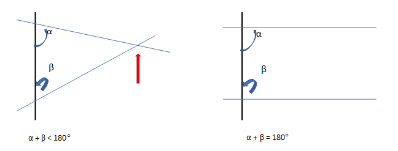
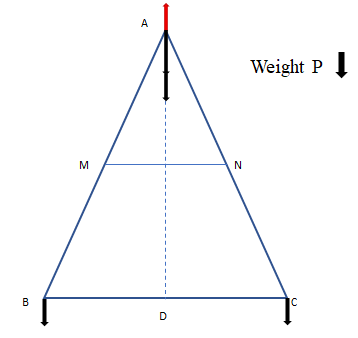

vol I chap 4 appendix
Previous: 4.3 Aspects and Factors distinguishing scientific theories.
Appendix 4A. How the lever principle serves to justify that the postulate of the parallels is satisfied.¶
In what follows we describe the explanation made by Lagrange. Figure 4.3 expresses the content of Euclid's fifth postulate and figures 4.4 to 4.7 correspond to the explanation attributed to Lagrange.

Figure 4.3. The two lines are parallel only when α + β = 180º.
Lagrange's triangle consists in the following (Figure 4.4):
Let ABC be an isosceles triangle whose sides AB and AC are equal by construction.
Line AD is perpendicular to side BC and intersects this side at point D, which is in the middle of segment BC, that is, BD = DC.
Points M and N are in the middle of respective sides AB and AC so that BM = MA in one side and AN = NC in the other side.

Figure 4.4. Characteristics of the triangle ABC, the so-called Lagrange’s triangle.
Now consider that Lagrange's triangle is suspended from point A and that a weight 2P is applied to point A and a weight P is applied to each endpoint B and C, as shown in Figure 4.5. Under such conditions, the triangle BAC is in equilibrium with respect to the axis that passes through the line AD: the weight 2P in A does not intervene because it is at a zero distance from the axis AD. The weights that hang from B and C satisfy the condition of the lever:
Suspension point in A: (P) x (BD) {left side of D} = (P) x (DC) {right side of D}.

Figure 4.5. Application of the principle of the lever when the suspension is in A: (P) x (BD) = (P) x (DC).
Now consider that the weight 2P that was hanging at A is divided in two parts: a weight P is applied at point A to a lever to be suspended from the point M (which is in the middle of segment BA) and the other weight P is applied at that same point A but to the lever that is suspended from point N (which is in the middle of segment AC) (Figures 4.6a and 4.6b). Under these conditions we obtain
Suspension in M: (BM x P) {left side of M} = (MA x P) {right side of M}.
Suspension in N: (AN x P) {left side of N} = (NC x P) {right side of N}.

Figure 4.6. Levers with suspension centers in M (a) and in N (b).
Then suppose that the weights on B and A in Figure 4.6a are applied to M and the weights on A and C in Figure 4.6b are applied to N. Superposing these two conditions, we have in the triangle ABC that each one of the weights on M and on N are 2P. The aforementioned distribution of weights also maintains the balance of triangle ABC with respect to an axis passing through points M, E, and N. This is shown in Figure 4.7 where the triangle is placed vertically and suspended from point E, which is the intersection of line AD. with the line MN.

Figure 4.7. Redistribution of the weight on M and on N corresponding to the superpositions of previous figures 4.6a and 4.6b. Now the triangle ABC is suspended from E.
The situation of the triangle ABC in a vertical position and in equilibrium with respect to the suspension point E is equivalent to a lever along the axis MN, with center in E and with weights equal to 2P on each side. If the distances from the center E to the ends M and N are \(d_1 = ME\) y \(d_2 = EN\). Applying the principle of the lever, we obtain:
Suspension in E: (ME x 2P) {left side of E} = (EN x 2P) {right side of E}.
Since the above condition is satisfied because the lever is in equilibrium, we get ME = EN and therefore E is the midpoint of the segment MN. Under these conditions, the line AD, which is perpendicular to the line BC because it bisects the angle BAC, is also perpendicular to the line MN at point E. This implies the equality between the angles DEM = DEN and ADB = ADC, all of them having 90° which indicates that lines MN and BC are parallel to each other.
The previous affirmation is identified with the fifth postulate of parallels, which indicates that the sum of the angles α = NED and β = CDE is two right angles, each of these angles being equal to 90° and that therefore \(α + β = 180°\). This means that the static equilibrium in Lagrange's triangle is explained in terms of the lever principle, showing that the applicability of such a principle justifies Euclid's parallel postulate. Certainly, this implies that the lever principle is applicable only in flat spaces of zero curvature corresponding to Euclidean spaces.
Appendix 4B. Connections of the lever principle with the natural states of motion as well as with conservation laws.¶
First natural state of bodies in motion: the uniform translational motion of bodies on Earth.
The conservation of linear momentum (\(p_{total}\)) is a consequence of the fact that the resultant of the forces is zero: if \(F_{resultant} = \frac{d(p_{total})}{dt}=0\), then \(p_{total}\) is constant. The linear momentum of the total system is \(m_Av_A + m_Bv_B\). If before the collision \(v_B = 0\) and after the collision \(v_A = 0\), the conservation of linear momentum implies that before the collision we have \(m_Av_A+0 = m_Av_A\), and after the collision \(0 + m_Bv_B = m_Bv_B\). Therefore \(m_Av_A = m_Bv_B\). (We omit the vector notation since the motion is uniform and in a straight line.)
We make two substitutions in the relation expressing the conservation of linear momentum: \(m_Av_A = m_Bv_B\). In the first substitution each mass is indicated as the quotient of the weight divided by the acceleration of gravity (g): \(m_A = P_A/g\) y \(m_B = P_B/g\). For the second substitution we consider that the movement is rectilinear and uniform and that each velocity is the quotient of the distance traveled divided by the time used to cover it. If the times are equal \(t_A = t_B = t\), then \(v_A = d_A/t\) y \(v_B = d_B/t\). For body A: \(m_Av_A = (P_A/g)(d_A/t) = (P_Ad_A)/(gt)\) and for body B: \(m_Bv_B = (P_Bd_B)/(gt)\). Equating the total linear moments and simplifying the common factor (gt) the well-known lever principle \(P_Ad_A = P_Bd_B\) is obtained.
Second natural state of bodies in motion: the uniformly accelerated motion of bodies falling from heaven to Earth.
Equations \(h_A = (v_A)^2/(2g)\) and \(h_B = (v_B)^2/(2g)\) are based on the following:
1) The movement of free fall is rectilinear.
In this movement, the object that is released from a certain height (h) and is allowed to fall without pushing it, at first has zero initial velocity (\(v_{initial} = 0\)) and when it falls it follows a rectilinear trajectory that corresponds to the vertical, if there is no air friction. However, such movement does not correspond to a uniform velocity because this physical quantity changes with time due to the action of the acceleration of gravity that causes the speed of fall to increase with time. When the object reaches the ground in a fall time (\(t_c\)) it will have reached the velocity \(v_{final} = gt_c\).
2) Free fall motion is not uniform but uniformly accelerated.
If the initial point from which the displacements are measured corresponds to the place from where the object is dropped out, the distance traveled will be the height (h) from which it is released. If the movement were uniform with velocity \(v_{constant}\), the distance traveled (h) would depend linearly on time \(h = (v_{constant})(t)\). However, since there is an acceleration that modifies the initial velocity, the distance traveled is \(h = (v_{average})(t)\) where \(v_{average} = (½)(v_{initial} + v_{final})\) is the average velocity. Then, as \(v_{initial} = 0\), it results \(v_{average} = (½)(v_{final})\).
As in the previous case \(v_{final} = gt\), therefore \(h = (v_{average})(t) = ½(v_{final})(t) = ½(gt^2)\). Solving for time in \(v_{final} = gt\) and substituting into the previous expression \(h = (½)(gt^2)\) it can be obtained \(h = (½)(g)(v/g)^2 = (v^2)/(2g)\). This allows us to write that in the case of free fall of bodies A and B we have \(h_A = (v_A)^2/(2g)\) and \(h_B = (v_B)^2/(2g)\).
If bodies A and B reach the heights \(h_A\) and \(h_B\) it is because some work has been done previously to move both bodies from the ground to their corresponding heights. Since the work (\(W\)) is defined as the product of the force (the weight) multiplied by the distance moved (d), which in this case is in the same direction in which the force is applied, it follows that \(W_A = (P_A)(d_A)\) and \(W_B = (P_B)(d_B)\). If these works are equal (\(W_A = W_B\)) the well-known law of the lever is obtained again: \(P_Ad_A = P_Bd_B\).
Now consider that the weights of the two bodies are \(P_A = m_Ag\) and \(P_B = m_Bg\), that the distances traveled are \(d_A = h_A\) and \(d_B = h_B\), and that for each body the expression \(h = (v^2)/(2g)\) is used. Therefore, the corresponding works are \(W_A = P_Ad_A = [m_Ag][(v_A)^2/(2g)] = (½)(m_A)(v_A)^2\), and \(W_B = P_Bd_B = [m_Bg][(v_B)^2/(2g)] = (½)(m_B)(v_B)^2\). Therefore, the equality of the total work done by the two falling bodies (\(W_A = W_B\)) corresponds to the conservation of kinetic energy: \((½)(m_A)(v_A)^2 = (½)(m_B)(v_B)^2\).
Previous equation is known as the work-energy theorem, which can be derived from the definition of work as the integral of the scalar product of the force multiplied by the displacement \(W= \int \vec{F}∙d\vec{r} = \int (m \frac{d\vec{v}}{dt}) ∙d\vec{r} =m \int (\frac{d\vec{r}}{dt}) ∙d\vec{v} = m \int \vec{v}d\vec{v}= (\frac{m}{2})(v^2)\).
Variation of the first natural state of bodies in motion: the uniform rotational movement of bodies on the Earth.
If there is balance on the lever, there is no rotation with respect to C and the combined action of the torques produced by each of the weights is cancelled. Each torque is the product of the weight of the body by the distance from the point of application of the weight to the axis of rotation: \(Torque_{left} = (–P_Ad_A)\) and \(Torque_{right} = (+P_Bd_B)\). In the equilibrium condition with respect to the rotational movement, it must be that \(Torque_{left} + Torque_{right} = 0\). From this condition it follows that \((– P_Ad_A) + (+P_Bd_B) = 0\) and \(P_Ad_A = P_Bd_B\), which is the law of the lever.
For a body of mass \(m\) and velocity \(\vec{v}\) the linear momentum is \(\vec{p}=m\vec{v}=m(d\vec{r}⁄dt)\) and the angular momentum is \(\vec{l}=\vec{r} \times \vec{p}\), If the force is \(\vec{F}\) the torque is \(\vec{τ}=\vec{r} \times \vec{F}\). It can be shown that \(d\vec{l}⁄(dt)=( d[\vec{r} \times \vec{p}])⁄(dt)=(d\vec{r}⁄dt) \times \vec{p}+\vec{r} \times [d\vec{p}⁄dt]=[\vec{r} \times (d\vec{p}⁄dt)]=\vec{r} \times \vec{F}=\vec{τ}\). Then if \(\vec{τ}=0\), \(d\vec{l}⁄dt=0\) mens that \(\vec{l}\) is constant.
[The product \((d\vec{r}⁄dt) \times \vec{p}\) is zero since the vectors \(d\vec{r}⁄dt\) and \(\vec{p}=m\vec{v}\) are parallel.] Then, if the torque resulting from the action of two or more forces is zero the angular momentum is constant (conserved).